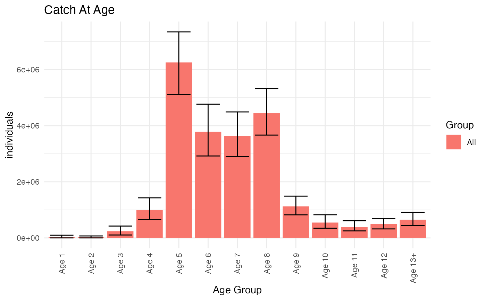

Plots total catch in each age group as a barplot with error bars.
Arguments
- ReportFdaCatchAtAgeData
ReportFdaCatchAtAgeDatawith catch at age estimates to plot
Details
Error bars correspond to the columns 'High' and 'Low' in 'ReportFdaCatchAtAgeData' If 'ReportFdaCatchAtAgeData' has grouping variables a bar will be plotted for each group and age-group, and bars will be grouped by age group
See also
Provide data for this plot with e.g. ReportRecaCatchAtAge
Examples
catchAtAgeReport <- RstoxFDA::ReportRecaCatchAtAge(RstoxFDA::RecaCatchAtAgeExample,
PlusGroup = 13)
RstoxFDA::PlotCatchAtAgeTotals(catchAtAgeReport)
